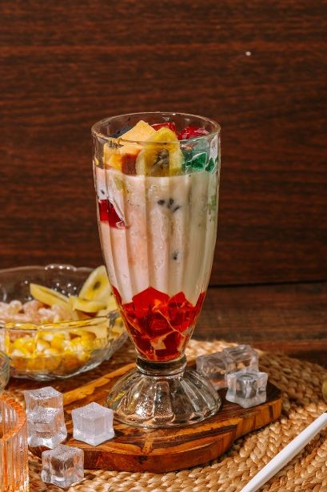

MABUHAY!
GOURMET DISCOVERIES
Savor Everyday Life
WITH AUTHENTIC FILIPINO RECIPES

Main Dish

Dessert

Streetfood

Beverage
Main Dish
WITH AUTHENTIC FILIPINO RECIPES ALONG WITH THEIR HISTORY

Adobo

Sinigang

Kare-Kare

Tinola

Lechon Kawali
Adobo
HISTORY
Adobo is a dish of protein braised in vinegar, and spiced with garlic and black peppercorns. The term “adobo” itself comes from the Spanish word “adobar,” which means to marinate or pickle. In pre-colonial times when early Filipinos used vinegar and salt to preserve. Adobo has evolved significantly over the centuries, influenced by various cultures that interacted with the Philippines.
The Chinese traders introduced soy sauce, which became a common ingredient in many adobo recipes, replacing or complementing the use of salt. The Spanish influence is also evident in the use of ingredients like garlic and bay leaves. Adobo is not a single recipe but a collection of various regional adaptations. Each region in the Philippines has its own version of adobo, reflecting local tastes and available ingredients.
The Chinese traders introduced soy sauce, which became a common ingredient in many adobo recipes, replacing or complementing the use of salt. The Spanish influence is also evident in the use of ingredients like garlic and bay leaves. Adobo is not a single recipe but a collection of various regional adaptations. Each region in the Philippines has its own version of adobo, reflecting local tastes and available ingredients.